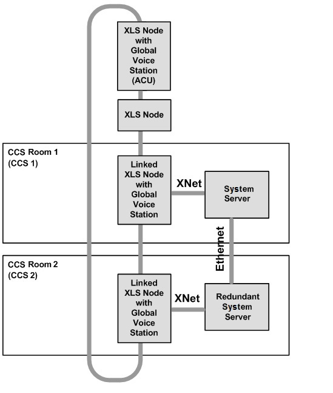

Hierarchy Concept for Mass Notification Application with XNET
For each XNET Global Voice network, Desigo CC provides Request/Grant/Deny access control between each configured Central Control Station (CCS) and an optional Autonomous Control Unit (ACU).
Each CCS consists of a Desigo CC station and a fire control panel which are physically co-located (in the same room within 20 ft (UL) or 18 m (ULC) and connected via rigid conduit) with the intent that a single person can operate both panel and management station, and are linked through proper configuration. Visual displays and associated controls shall be located and grouped for viewing and operation by one person from one location. A linked fire control panel with a Global Voice station must exist for each Global Voice network for which each Desigo CC will have control capability.
One optional ACU is allowed per XNET network. The ACU consists of a fire control panel located with a Global Voice station.
Hierarchy Concept for MNS Application
When control is held by the Central Control Station (CCS), an Autonomous Control Unit (ACU) may immediately take control of the network. When control is held by a CCS, another CCS may request control. The operator at the CCS in control may then grant or deny the request, or automatic transfer via a selectable timeout period, which must be configured from 1 second to 90 seconds for granting access.

NOTE: Refer to the SNC (P/N: AV6101018824_en), NCC-2F (P/N: 315-0494430), NIC-C (P/N: 315-033420), FireFinder XLS Manual (P/N: 315-033744) for proper wiring diagrams.